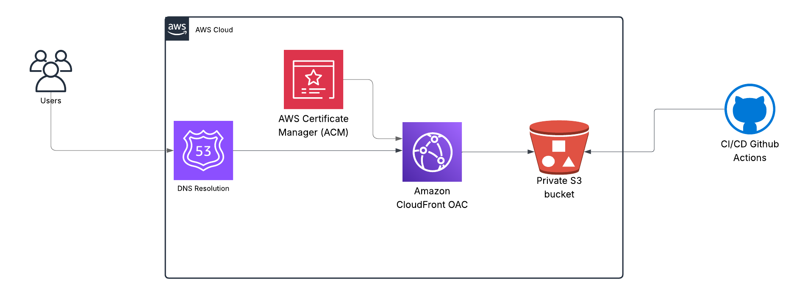

How I Built This Project
Cloud architecture and deployment workflow

Diagram: Route 53 → CloudFront (OAC) → S3 with CI/CD from GitHub Actions
Architecture Overview
- Hosted on a private S3 bucket (static website hosting disabled)
- Secured with CloudFront CDN + Origin Access Control (OAC)
- Served over HTTPS via AWS Certificate Manager (ACM)
- Custom domain registered with Amazon Route 53
- Automated deployments using GitHub Actions for CI/CD
Every time I push code to GitHub, an automated GitHub Actions workflow syncs the site to S3. CloudFront (a Content Delivery Network or CDN) delivers the site securely using HTTPS with an ACM certificate. Route 53 resolves DNS queries to the CloudFront distribution.
You can also check the actual deployment workflow file used in .github/workflows/deploy.yml .